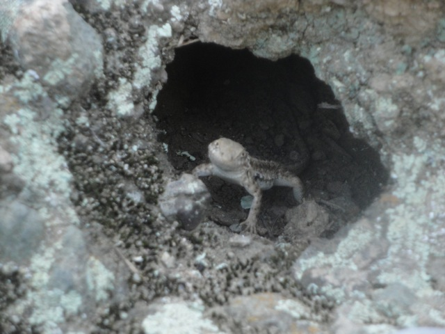

Malibu Creek 2012
All right. Time for another fun update. This one is actually a cliff jumping update that we took at Malibu Creek. It was a quick experimental visit. It was originally just for fun and we were going to go back and do a much bigger update in the summer. Why didn't we? Keep reading and find out.
Well first off, I originally planned this trip for my Mountain Climbing Class (Yes, this is a real class), and then discovered there was cliff jumping afterwards and added it on.
Quick Saftey Note. If you're going Rock Climbing, DO NOT STICK YOUR FINGERS IN THESE!!!!!!
 Doesn't look as pretty as Tar Creek, but at least its not like Rindge Dam.
Doesn't look as pretty as Tar Creek, but at least its not like Rindge Dam.

Can I please go cliff jumping and rock climbing with you guys?
Rock Climbing may not be as crazy as cliff jumping, but its still pretty damn awesome. Admit it. This is cool and you know it.
The sheer fact that this is a class is amazing. This and other cool classes almost make up for the disgusting horrible classes that CSUN offers and mandates *cough* 309 *cough*. The key word here being almost. =)
Bridge Credit!
This photo almost makes Malibu Creek seem like a cool place.
All right. Now its time for the cliff jumping part of the day. Story Time. After the Rock Climbing Class, I waited for Cody and we went cliff jumping. Well it was close to sunset and the water was freezing, so we didn't cliff jump much. I did the 10 ftr, the 30 ftr, and the 50 ftr. Cody ended up doing the 60 ftr and liked it. I liked the place and wanted to jump more, but it was getting colder than a witch's tit and we decided to head on out and try and have dinner at Neptunes Net (A: We never made it to Neptunes Net that night. B: We later went to Neptunes Net and IT SUCKED!!! Bland Food that was overpriced. If I want that, I'll eat at Six Flags Magic Mountain). I was planning on going back to Malibu Creek to jump their 60 ftr (doesn't matter now since I jumped the Tar Creek 70ftr), but later Cody ended up going when I was working and man, from the way he described it, IT SUCKED!!!!! Apparently, it was flooded with people, the pool was overcrowded, the water was super dirty, and people were sh*tting everywhere!!! I was told that there was apparently this 10 year old kid, he just pulled down his pants and took a sh*t, and after he was done (Yes, he was pooping in front of everyone), his mom came over, wiped him (Really kid? You're like 10 years old and still can't wipe?) and then just threw the toilet paper on the ground. Now, keep in mind, I wasn't there. I'm just relying on Cody and Dylan to verify this story. But assuming that this is true, the What the f*ck is wrong with you meter is literally through the roof. Everyone who was at Malibu Creek that day sounds like they need to be tasered and then given a restraining order saying that they must stay at least 3 miles away from any sort of nature cause these are the kind of people who will turn Tar Creek into the Punch Bowls. I mean, I liked Malibu Creek when I first went. It was fun and while it wasn't better than Tar Creek, I still liked it better than Rindge Dam. But now after hearing about Codys last visit, I never want to go back. I mean, I wasn't there, but these stories are enough. And if that wasn't enough, the place apparently smelled so bad that when I got in Cody's car a couple days later, it reeked of human sh*t!! That alone just proves to me that this place is destined for hell. The ONLY possible thing that gives me hope for Malibu Creek is that the L.A Swimming Crew still goes cliff jumping there. And I know that if Throb saw what Cody and Dylan saw, I'm pretty sure he'd lose his sh*t. But still, I don't plan on coming back anytime soon, and if I do, it'll be with the L.A Swimming Crew.
When I first saw this sign, I laughed at the idea of cliff jumping when drunk. But then, sure enough, during Cody & Dylan's horrible visit to Malibu Creek, they saw a drunk guy. He apparently saw Cody & Dylan jump the 60 ftr and said "I wanna do this". Cody and Dylan explained to him that if he wanted to jump, to just go. Most non-regular cliff jumpers would get hesitant and have to gather up courage to actually jump. This guy just jumped and ended up belly flopping the 60 ftr. It truely depresses me that we need a sign that says "Don't Cliff Jump under the Influence of Alcohol." I can't even have a pillow fight intoxicated without it ending up with something breaking. Imagine if I jumped the Tar Creek 70 ftr drunk. *shakes head* Idiots.
Home